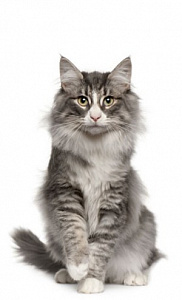
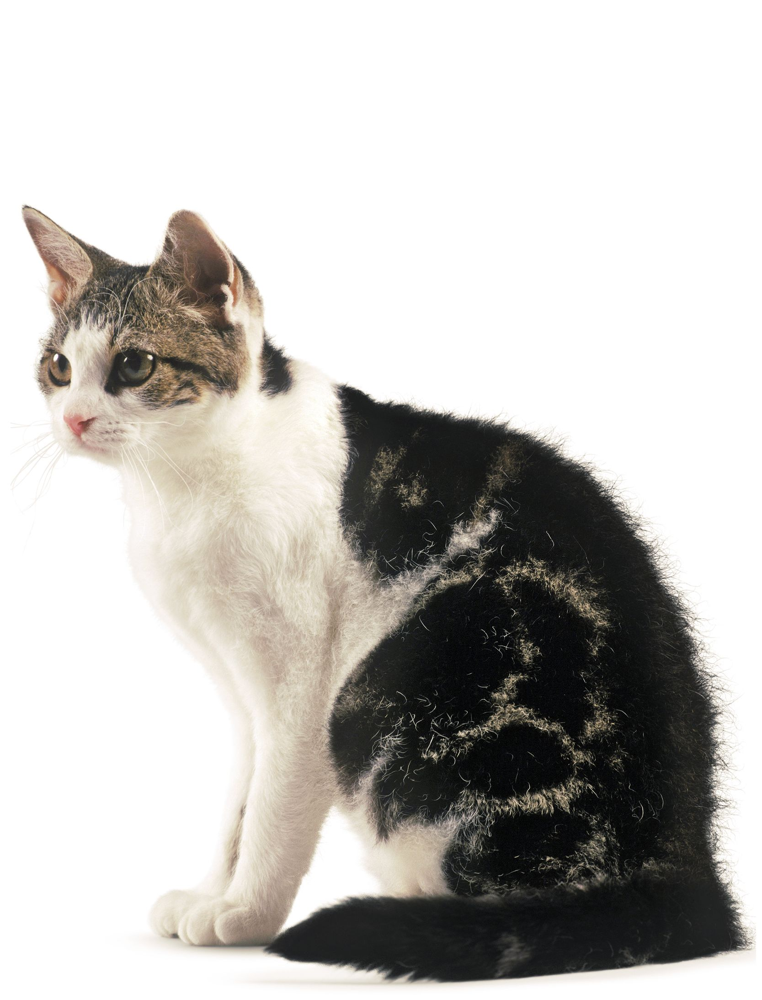
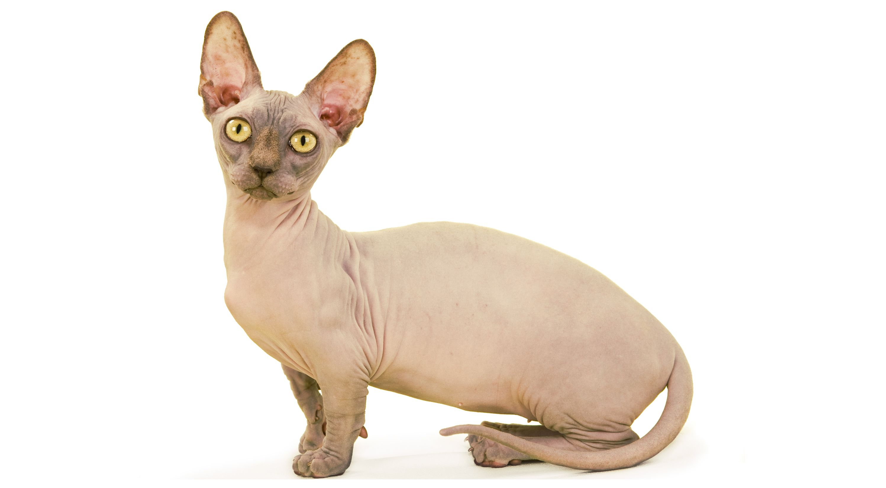

Каталог котиков (=^･ｪ･^=)
вид:-
БритэнКэт Немного Чванливый Весьма Дружелюбный Теплолюб
Британская короткошерстная
$10 000.00
Описание
- Британские короткошерстные кошки являются традиционной английской породой и гордостью Великобритании.
- По одной из версий эти кошки попали в Англию более 2000 лет назад с римскими легионерами, по другой версии - прибыли в роли корабельных котов на судах Франции.
- Эти кошки довольно быстро прижились и завоевали популярность среди англичан. Они долгое время существовали как простые домашние кошки, пока в 19 веке заводчики не начали вести селекционную работу, целью которой было выведение отдельной породы. В настоящее время британская короткошерстная кошка – одна из самых популярных пород и горячо любима во многих странах
-
КэтБирмэн Сурьезный Очень Сама Доброта Длиношуб
Бирманская кошка
$2 000.00
Описание
- История происхождения породы точно не известна и ее окутывают легенды.
- Впервые Священная Бирма была представлена на выставке кошек в Париже в 1926 году, но только в 1950 году порода получила свое официальное название.
- С тех пор бирманская кошка начала распространяться и завоевывать популярность и в других странах Европы и Америки, выйдя за пределы страны своего происхождения – Франции.
-
ШотлэндМяу Большеглаз ЧиширПэр МудроДобрик
Скоттиш-страйт (Скоттиш, Шотландская)
$6 500.00
Описание
- Данная порода кошек мало отличается по своим характеристикам от британской короткошерстной кошки.
- Скоттиш-страйты происходят от своих ближайших сородичей – скоттиш-фолдов.
- скоттиш-фолды, шотландские прямоухие кошки обладают роскошной «плюшевой» шубкой. Сама шерсть не прилегает к телу, очень мягкая, с густым подшерстком.
-

КисНорвеу ПростоОстроУх Добродушанчик
Норвежский лесной кот
$1 750.00
Описание
- прародителями лесного норвежского кота являются длинношерстные коты, завезенные викингами из Турции.
- Первые упоминания о лесных котах появились в детской книге, написанной в 1912 году. В этот период норвежские лесные коты, получили официальное признание. Для того чтобы сохранить этот вид в 30-х годах прошлого века начались работы по разведение лесного кота.
- Она всегда привлекает большой интерес и симпатию среди посетителей выставок.
-

ЯнкиКис УилВест Ковбой
Американская жесткошерстная
$20 000.00
Описание
- Необычная колючая шерсть - результат генетической мутации.
- Свою историю американские жесткошерстные кошки ведут с 1966 года, когда в результате спонтанной мутации в помете появился котенок необычного вида.
- Жесткошерстные американские кошки обычно не боятся незнакомцев и легко уживаются с другими домашними животными.
-

Бамбино ПинкСкин Большеух
Бамбино
$100 000.00
Описание
- Порода бамбино является результатом скрещивания манчкинов и сфинксов – от первых они унаследовали коротконогость, а от вторых – отсутствие шерстяного покрова.
- Это молодая экспериментальная порода, не признанная большинством фелинологических ассоциаций. Их история началась совсем недавно, первый помет был зарегистрирован в 2005 году.
- Название породы происходит от итальянского слова bambino – "ребенок", "малыш". Это словесное описание отражает детскую внешность, которую необычные кошки бамбино сохраняют всю жизнь.
-
БенгалМур Шерханчик Полосатик
Бенгальская
$7 000.00
Описание
- Эта порода была выведена в результате скрещивания азиатской леопардовой кошки с домашней.
- Эти кошки очень любят купаться, а еще, несмотря на свои внушительные размеры (4–8 кг), часто забираются на плечи к хозяину.
- Считается, что кошки бенгальской породы довольно легко поддаются дрессировке. Их можно научить различным трюкам – например, приносить обратно брошенный предмет. Стоит подумать дважды, прежде чем учить кошку включать и выключать свет – легко освоив этот полезный навык, питомец может играть с выключателем ночь напролет!
-

КаКаоМани Разноглазик Милашка
Као-мани
$12 000.00
Описание
- Самое раннее упоминание об этой породе находится в «Tamra Maew», или в «Кошачьей книге поэм» (1350–1767 гг.).
- В древнем Сиаме као-мани жили только в королевских семьях и считались символом удачи, долголетия и богатства.
- Помимо голубого цвета глаз, стандартом TICA допускается гетерохромия – разные цвета правого и левого глаз као-мани.
-
КотоПес Короткохвост Дружелюбный
Меконгский бобтейл (Тайский бобтейл)
$4 700.00
Описание
- Меконгский бобтейл отличается сообразительностью и особой привязанностью к своему хозяину.
- Эти кошки, как и собаки везде следуют за хозяином, цокая по полу своими лапками, из-за особенности строения коготков на задних лапах, которые не втягиваются. Поэтому, когда эти кошки бегут на встречу Вам из соседней комнаты, может показаться на слух, что у Вас в доме живет не кошка, а маленькая юркая собачка.
- Как и собаки эти кошки любят переносить свои игрушки в зубах, они также миролюбивы и с легкостью уживаются со всеми домашними питомцами.
-
КунМэйБиг Волосатик Остроух Громадина Дружелюбный
Мейн-кун
$22 000.00
Описание
- История происхождения мейн-куна в точности неизвестна, вокруг этих животных сложилось множество легенд. Дружелюбный гигант с независимым характером.
- Мейн-куны славятся деликатным и ласковым характером и, как правило, хорошо ладят с детьми и домашними животными. В отличие от многих других пород, они не стремятся взбираться на высокие предметы и предпочитают играть на полу.
- Вес кота породы мейн-кун может достигать 9 кг, а длина – 120 см (вместе с хвостом). Они медленно взрослеют и достигают окончательных размеров к возрасту 3-5 лет.